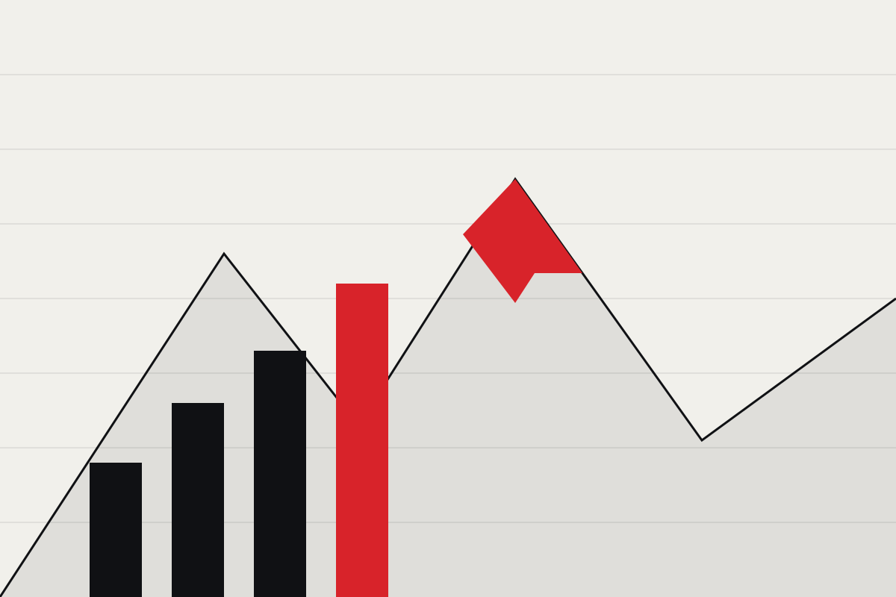

01
La pratique avant la théorie
Chaque session doit produire quelque chose d'utilisable au prochain entraînement. Sinon, le format est réécrit.
L'association
Swiss-made Coaching est née en 2015 à Lausanne. C'est une association à but non lucratif : pas d'actionnaires, pas d'objectif commercial — ses moyens repartent dans les workshops et dans les ressources mises à disposition des membres.

Emplacement photoPourquoi elle existe
La plupart des coachs suisses sont bien formés : le système Jeunesse & Sport fournit une base méthodologique solide et des remises à niveau régulières. Mais une fois le cours terminé, chacun retourne dans son club et devant son groupe. Les questions qui traversent une saison — un joueur qui décroche, un parent trop présent, une séance qui ne prend pas — se règlent le plus souvent seul.
L'association existe pour combler ce vide. Pas pour remplacer la formation fédérale, mais pour lui donner un endroit où continuer à circuler : entre disciplines, entre niveaux, entre générations de coachs.
Le cadre
Nos contenus suivent la méthodologie enseignée par Jeunesse & Sport, le programme piloté par l'Office fédéral du sport (OFSPO) avec Swiss Olympic. Cet alignement est volontaire : un coach qui participe à nos workshops doit y retrouver le même vocabulaire et les mêmes principes que dans sa formation fédérale, pas une méthode concurrente.
Concrètement : la même attention à la progression adaptée à l'âge, à la sécurité, au plaisir de pratiquer, et à la responsabilité du coach vis-à-vis des jeunes athlètes.
Concrètement
Des soirées de deux heures ou des journées complètes, animées par des membres ou des invités. Les formats restent courts pour qu'un coach qui donne déjà quatre soirs par semaine à son club puisse venir.
Entre deux événements, les membres échangent directement : une question posée le matin trouve généralement trois réponses venues de trois sports différents dans la journée.
Chaque workshop laisse une trace — notes, fiches de séance, synthèses — archivée et accessible aux membres par la suite.
Au moins un événement est ouvert aux non-membres, pour que les curieux puissent voir ce qu'est l'association avant d'y adhérer.
Ce à quoi on tient
01
Chaque session doit produire quelque chose d'utilisable au prochain entraînement. Sinon, le format est réécrit.
02
Sports collectifs, sports individuels, salle, extérieur : c'est le mélange qui rend l'échange utile.
03
Aucune marque n'achète un créneau dans un workshop. Ce qui est présenté l'est parce que ça fonctionne, pas parce que ça se vend.
04
La cotisation reste basse et l'association cherche des solutions pour les coachs dont le club ne peut pas la prendre en charge.
Gouvernance
L'association est dirigée par un comité de coachs bénévoles, élu par l'assemblée générale. Les membres peuvent s'y présenter, proposer un workshop, ou simplement participer.
À compléter : la composition du comité, les statuts et la date de la dernière assemblée générale ne sont pas encore publiés ici. Transmettez-les et ils seront ajoutés à cette page.
Adhésion
L'adhésion donne accès aux workshops, aux ressources produites par les membres et à un réseau de coachs qui répondent quand on leur écrit. Rejoignez l'association en quelques minutes.